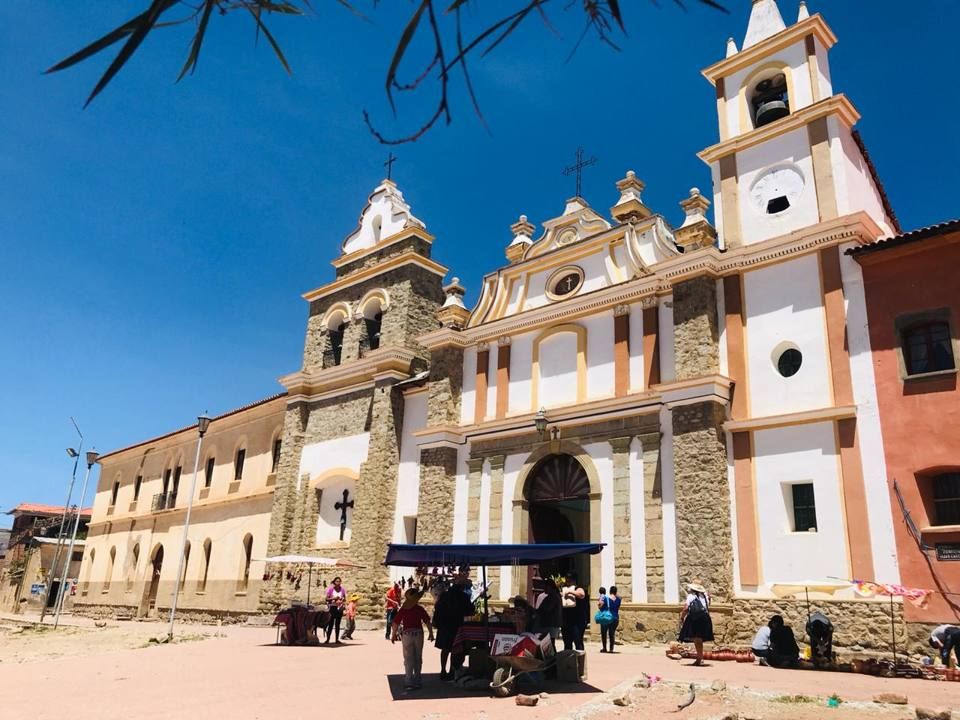
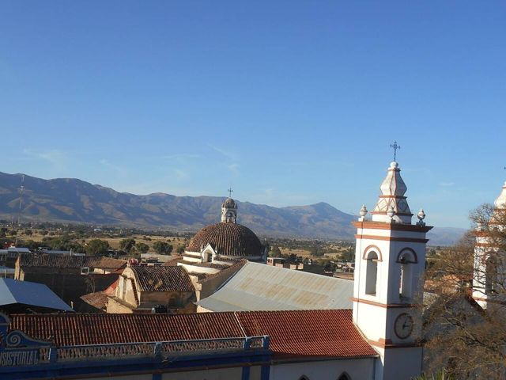
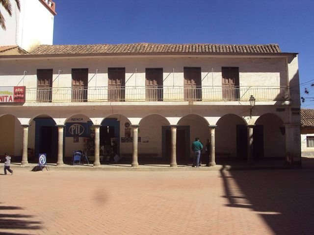
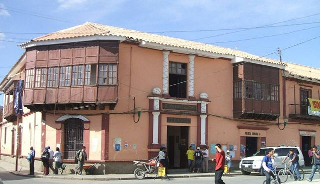
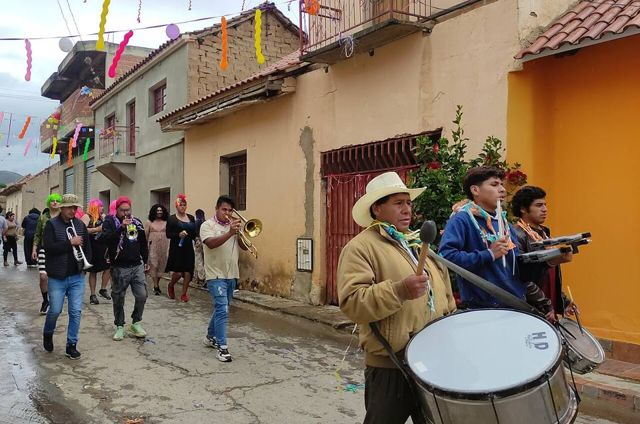
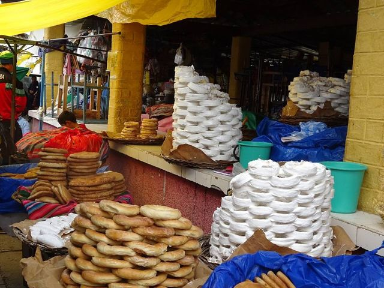
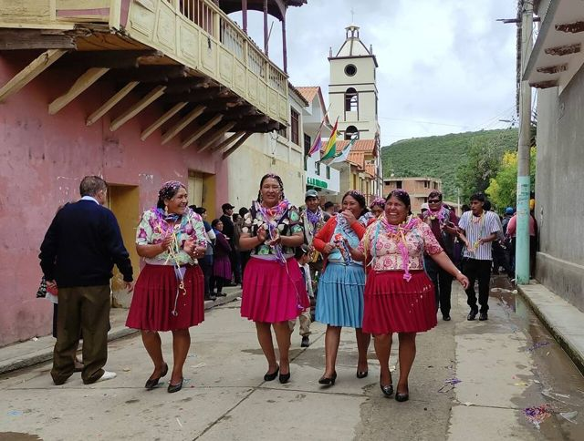

Valle Alto: Tarata and Cliza
Cochabamba Department · Culture and history

The Valle Alto is Cochabamba's countryside: adobe colonial villages, cornfields and chicherías, where chicha (corn beer) is served in gourds. Tarata, with its cobbled streets and large square, is one of the prettiest villages in the region. Ideal for a quiet, very local day out.
2,750 maltitude
1 dayto spend there
Things to do
- Tarata: listed colonial village, San José convent
- Sunday market in Cliza
- Try corn chicha and local chicharrón
- Punata (Tuesday market)
What to eat
- ChichaFermented corn beer, slightly sour, served in gourds (tutumas). Look for chicherías marked with a white flag.
- ChicharrónPork cooked slowly in its own fat until golden, served with mote (big corn kernels) and chuño. A Sunday dish.
- Picante mixtoA plate of several meats (chicken, tongue, beef) in chilli sauce, with chuño and rice. For chilli lovers.
Tip. Easy half-day or day trip from Cochabamba by trufi (minibus).
How to get to Tarata and Cliza
Cochabamba Road (bus, car) · 45 min
Frequent trufis (minibuses) to Tarata and Cliza.
Photos of Valle Alto: Tarata and Cliza












More places in this region
 CochabambaThe “city of eternal spring” and the food capital of the country.
CochabambaThe “city of eternal spring” and the food capital of the country. Laguna AlalayA large lagoon in the heart of Cochabamba, a bird refuge below the hills.
Laguna AlalayA large lagoon in the heart of Cochabamba, a bird refuge below the hills. Pairumani and Villa AlbinaThe villa of tin baron Simón Patiño, its gardens, and the start of a trail to the Tunari.
Pairumani and Villa AlbinaThe villa of tin baron Simón Patiño, its gardens, and the start of a trail to the Tunari. Tunari National ParkThe mountains right above the city: high lagoons and the Tunari summit (5,035 m).
Tunari National ParkThe mountains right above the city: high lagoons and the Tunari summit (5,035 m).- Apote and its twin waterfallsA mountain valley above Tiquipaya, with two waterfalls side by side and trails towards the Tunari.
 YungapampaA refuge above a sea of clouds, on the north side of the Tunari, Andean bear country.
YungapampaA refuge above a sea of clouds, on the north side of the Tunari, Andean bear country. Laguna CoraniA large reservoir among pine forests and mountains, known for its trout.
Laguna CoraniA large reservoir among pine forests and mountains, known for its trout. IncachacaA cloud forest at the edge of the Chapare, with an Inca bridge, waterfalls and an old power plant.
IncachacaA cloud forest at the edge of the Chapare, with an Inca bridge, waterfalls and an old power plant. Quillacollo and Inca RakayInca ruins perched above Sipe Sipe, and Quillacollo, home of the Urkupiña festival.
Quillacollo and Inca RakayInca ruins perched above Sipe Sipe, and Quillacollo, home of the Urkupiña festival. Torotoro National ParkDinosaur footprints, a spectacular canyon and the Umajalanta cave.
Torotoro National ParkDinosaur footprints, a spectacular canyon and the Umajalanta cave. IncallajtaThe largest Inca site in Bolivia, in a remote valley.
IncallajtaThe largest Inca site in Bolivia, in a remote valley. TotoraA small, well-preserved colonial village on the old road to Santa Cruz.
TotoraA small, well-preserved colonial village on the old road to Santa Cruz. AiquileBolivia's national charango capital, halfway between Cochabamba and Sucre.
AiquileBolivia's national charango capital, halfway between Cochabamba and Sucre. MizqueA colonial village in a warm valley, home of the red-fronted macaw.
MizqueA colonial village in a warm valley, home of the red-fronted macaw.